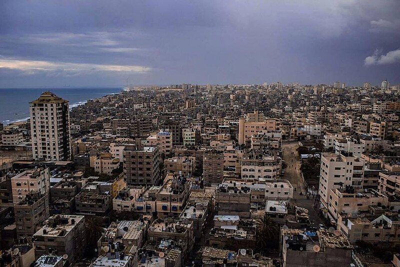
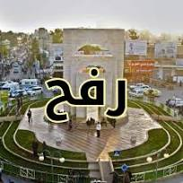

:شمال غزة

محافظة شمال غزة هي أحد المحافظات في قطاع غزة، يقدر عدد سكان المحافظة 281 ألف نسمة لعام 2005 موزعة على التجمعات السكانية وتضم (مدينة جباليا ومدينة بيت لاهيا ومدينة بيت حانون) تولت السلطة الفلسطينية إدارة المحافظة تطبيقا لاتفاق أوسلو سنة 1993 بعد أن كانت تتخذها قوات الجيش الإسرائيلي مقرا لها أثناء احتلال قطاع غزة ما بين 1967 و1994. تصل مساحتها إلى 62 كم مربع وتشكل 17% من إجمالي مساحة محافظات قطاع غزة وتشتمل على أربعة تجمعات حضرية وهي (مدينة جباليا- مخيم جباليا - مدينة بيت لاهيا - مدينة بيت حانون - ضاحية الشيخ زايد السكنية) (وعلى عدة تجمعات ريفية وهي( قرية أم النصر -عزبة بيت حانون - مشروع العلمي -تل الزعتر - بئر النعجة).
:دير البلح

دير البلح هي مدينة فلسطينية تقع في وسط قطاع غزة، وهي العاصمة الإداريّة لمحافظة دير البلح. تقع المدينة جنوب مدينة غزة على بُعد 14 كيلومتراً، وتبعد عن القدس 92 كيلومترًا إلى الجنوب الغربي، ويبلغ عدد سكانها 54,439 نسمة وفقاً لإحصاء عام 2007.
يعود تاريخ دير البلح إلى العصر البرونزي المتأخر حين كانت حصناً من حصون المملكة المصرية الحديثة. وفي منتصف القرن الرابع الميلادي قام الراهب المسيحيّ هيلاريوس ببناء دير هناك، ويُعرف هذا الدير في الوقت الحاضر باسم مقام الخضر. وفي عصر الحروب الصليببية كانت دير البلح موقع حصنٍ ساحليّ إستراتيجيّ عُرف باسم داروم، وهي كلمة سامية تعني الجنوب. كان هذا الحصنُ موضع نزاعٍ مُستمر بين الصليبيين والأيوبيين وتعرض للتخريب والهدم بشكلٍ مُتواصل حتى هُدم نهائيّاً عام 1196

خَانْ يُونُسْ هي مدينة فلسطينية، ومركز محافظة خان يونس. تقع في الجزء الجنوبي من قطاع غزة، وتبعد عن القدس مسافة 100 كم إلى الجنوب الغربي. يحدها من الجنوب مدينة رفح ومن الشمال مدينة دير البلح، وهي مركز محافظة ساحلية تطل على البحر الأبيض المتوسط من جهة الغرب ومن الشرق صحراء النقب. تعتبر خان يونس ثاني أكبر مدينة في قطاع غزة من حيث السكان والمساحة بعد مدينة غزة، حيث يبلغ عدد سكانها اليوم ما يزيد عن 451,000 نسمة، وهو ما يمثل 16% من سكان قطاع غزة. كما تبلغ مساحتها 54 كيلومترًا مربعًا، مما يجعلها واحدة من أكثر المدن الفلسطينية كثافة بالسكان.
أسس المماليك المدينة في القرن الرابع عشر، وقد بقيت على حالها تقريبًا طيلة فترة الحكم العثماني.

رفح هي مدينة فلسطينية حدودية، ومركز محافظة رفح. تقع في أقصى جنوب قطاع غزة التابع للسلطة الفلسطينية، وتبعد عن القدس حوالي 107 كم إلى الجنوب الغربي. تعتبر المدينة أكبر مدن القطاع على الحدود المصرية، حيث تبلغ مساحتها 55 كم2، وقد بلغ عدد سكانها عام 2006 قرابة 120,000 نسمة.
تعتبر مدينة رفح من المدن التاريخية القديمة فقد أُنشأت قبل خمس آلاف سنة ولقد غزاها الفراعنة والأشوريون والإغريق والرومان. قُسمت مدينة رفح إلى شطرين بعد اتفاقية كامب ديفيد، حيث استعادت مصر سيناء. عندما انسحبت إسرائيل من سيناء في عام 1982 تم تقسيم رفح إلى جزءان الأول رفح الفلسطينية والثاني رفح من جانب مصر